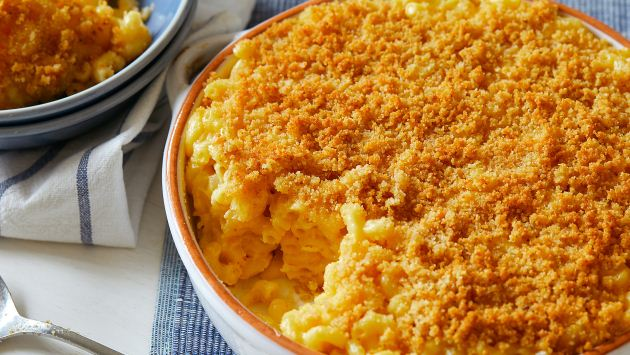

Baked Mac and Cheese

Description
Who does not love mac and cheese!
This baked version is simple and delicious.
Ingredients
- 16 ounces elbow macaroni, cooked
- 1 Tbsp. extra virgin olive oil
- 6 Tbsp. unsalted butter
- 1/3 Cup all purpose flour
- 2 Cups whole milk
- 2 Cups heavy whipping cream
- 1/4-1/2 Cup dry white wine
- 5 Cups sharp cheddar cheese, freshly shredded
- 3 Cups Gruyere cheese, freshly shredded
- Salt and pepper to taste
- 1 1/2 Cups Panko crumbs
- 4 Tbsp. melted unsalted butter
- 1 Cup parmesan cheese, freshly shredded
- 1/4 tsp. smoked paprika
Steps
- Preheat oven to 350 degrees, lightly grease a large 3 to 4 quart baking dish
- Combine shredded cheeses in a large bowl, set aside
- Cook pasta one minute shy of al dente per package instructions, remove from heat, drain and place in a large bowl
- Drizzle pasta with olive oil and stir to coat, set aside to cool
- Melt 6 Tbsp. butter in deep sauce pan
- Whisk in flour over medium heat and whisk until bubbly and light brown
- Gradually whisk in milk and cream until nice and smooth, continue whisking until you see bubbles on the surface then cook for an additional 2 minutes
- Add wine to sauce, whisk for an additional 2-3 minutes (sauce will return to previous thickness)
- Whisk in salt and pepper
- Add three cups shredded cheese and whisk smooth, whisk in an additional three cups of shredded cheese until smooth
- Stir in cooled pasta and combine with sauce
- Pour half of pasta and sauce mixture into prepared pan, top with remaining shredded cheese then cover with remaining pasta and sauce mixture
- In small bowl, combine panko crumbs, parmesan cheese, 4 Tbsp. melted butter and paprika
- Sprinkle over the top of pasta and sauce mixture and bake until bubbly and golden brown, approximately 30 minutes